先认结构，再辨目的
类图中的审批者保存同类型的 successor，并有多个具体审批者子类，这就是职责链的重要识图线索。先看 13 职责链。
这些是常见简化图，实际类名可以改变。策略与状态、装饰器与代理的骨架可能相近，还要结合方法职责和题干目的判断。
UML 图例与读图提示
| 符号 | 怎样读 | 看什么 |
|---|
| 实线＋空心三角形 | 子类指向父类 | 先找抽象角色及其具体实现。 |
| 虚线＋空心三角形 | 实现类指向接口 | 接口实现的常用画法；本图册主要用抽象类统一展示。 |
| 实线关联及引用箭头 | 持有者引用被指向的对象 | 看属性类型与箭头共同确认“谁持有谁”。 |
| 虚线依赖箭头 | 调用、创建或使用某类型 | 创建与调用标签表示依赖，不能看成继承。 |
| 空心菱形 | 共享聚合，菱形在整体端 | 不是父子继承；题图可能用普通关联表达持有。 |
| 实心菱形 | 组合所有权，菱形在整体端 | 本图册用文件夹拥有孩子作为组合的例子。 |
| 1 / 0..* | 一个 / 零到多个 | 装饰器包装一个组件，组合节点可含多个孩子。 |
| + / - / # / static | 公有 / 私有 / 受保护 / 静态 | 方法和属性也是识图线索。 |
抽象角色主要用抽象类统一展示。图例参照 OMG UML 规范；分类按 GoF 原书目录。
没有匹配的模式。可清空搜索或选择“全部”。
01 单例 Singleton
创建型
别名：单件
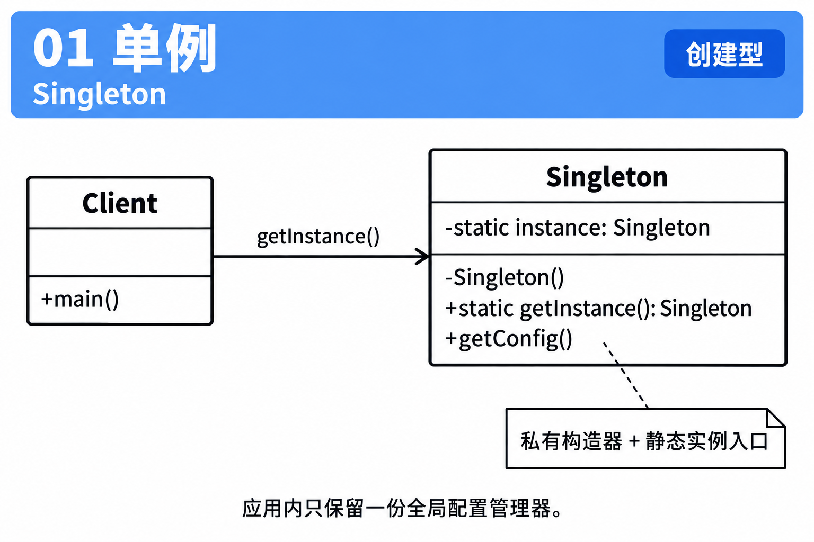
查看原尺寸图片
先看哪里
一个类里同时出现私有构造器、静态自身引用和静态获取入口。
例子与角色
应用内只保留一份全局配置管理器。
Singleton 对应 ConfigManager；Client 是读取配置的业务模块。
怎样协作
业务模块调用 getInstance()，拿到同一管理器，再读取配置。
主要优点
- 统一管理唯一实例与访问入口，避免调用者各自创建配置副本。
- 可以集中控制实例的创建时机。
代价与易混点
会引入全局状态；并发创建与测试隔离仍需具体实现保证。
只有一个工厂不等于单例；关键是受控的唯一实例。
回到分类与搜索
02 工厂方法 Factory Method
创建型
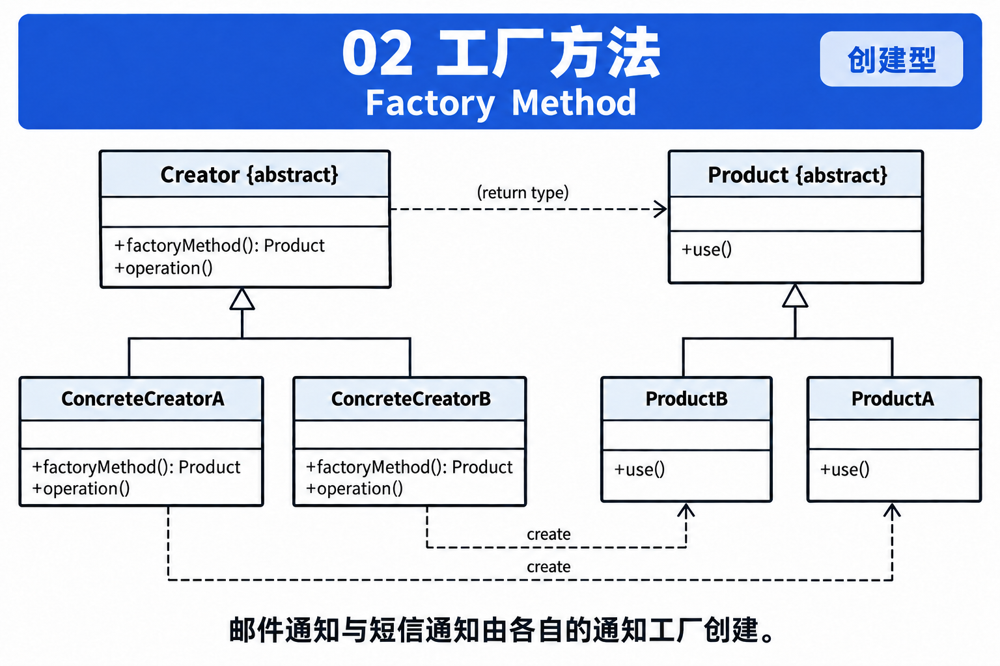
查看原尺寸图片
先看哪里
Creator 与 Product 各有继承层次；具体 Creator 覆盖一个返回 Product 的工厂方法。
例子与角色
邮件通知与短信通知由各自的通知工厂创建。
Creator 是通知创建者；Product 是通知；CreatorA／ProductA 对应邮件，CreatorB／ProductB 对应短信。
怎样协作
调用 Creator 的业务流程，由子类的 factoryMethod() 决定返回哪种 Product。
主要优点
- 使用产品的代码依赖抽象产品，减少与具体构造过程的耦合。
- 新增具体产品时，可以增加相应创建者子类。
代价与易混点
产品种类增加时，创建者子类通常也会增加。
工厂方法侧重由子类决定一种产品的创建；抽象工厂侧重成套产品族。简单工厂不属于这 23 种 GoF 模式。
回到分类与搜索
03 抽象工厂 Abstract Factory
创建型
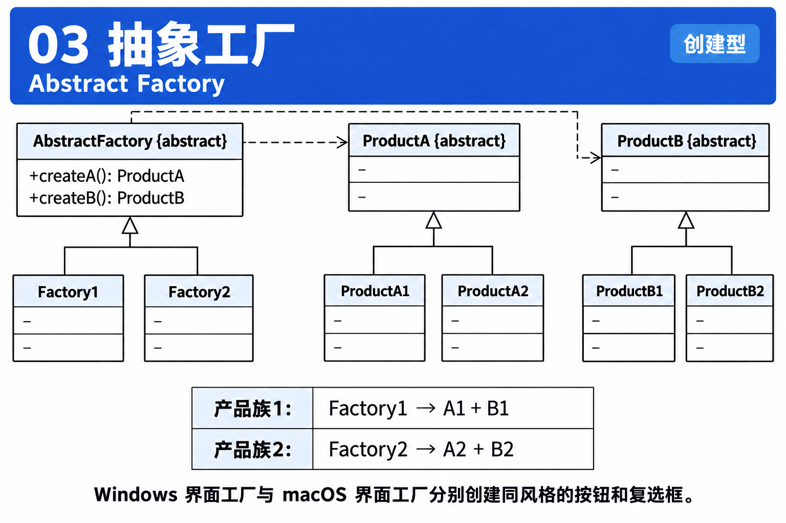
查看原尺寸图片
先看哪里
工厂接口有 createA()、createB() 多个创建方法；多个产品等级分别有继承层次。
例子与角色
Windows 界面工厂与 macOS 界面工厂分别创建同风格的按钮和复选框。
Factory1 的 A1／B1 属于同一产品族；Factory2 的 A2／B2 属于另一产品族。A、B 是不同产品等级。
怎样协作
先选定一个具体工厂，再由它创建相互配套的 A 和 B，客户端使用产品抽象。
主要优点
- 使同一产品族保持一致，避免混用不同风格的配套对象。
- 替换具体工厂可以切换整套产品，而使用方仍依赖抽象。
代价与易混点
新增一个产品等级时，通常需要修改抽象工厂及所有具体工厂。
产品族是同一品牌／风格的一套 A+B；产品等级是所有 A 或所有 B，不能混为一谈。
回到分类与搜索
04 建造者 Builder
创建型
别名：生成器
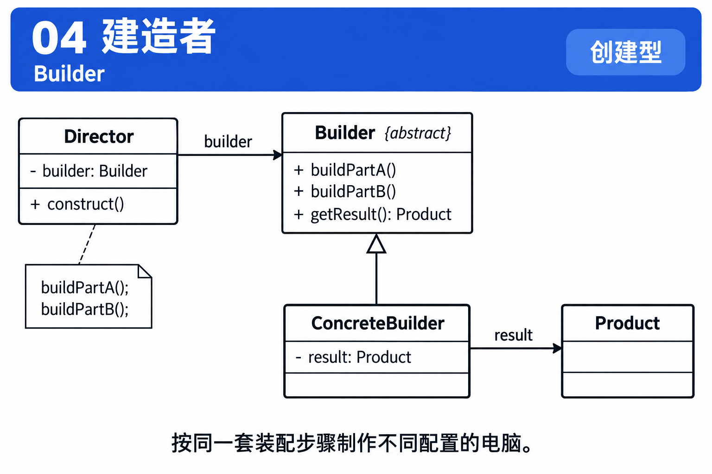
查看原尺寸图片
先看哪里
Director 持有 Builder；Builder 有多个 buildPart 步骤；ConcreteBuilder 产出 Product。
例子与角色
按同一套装配步骤制作不同配置的电脑。
Director 是装配流程；Builder 是构造步骤；ConcreteBuilder 是某配置的装配器；Product 是成品电脑。
怎样协作
Director 按顺序调用 buildPartA()、buildPartB()，由具体建造者组装并返回结果。
主要优点
- 复用稳定的构造流程，让不同建造者生成不同表示。
- 将复杂对象的分步构造与最终产品分离，便于逐步装配。
代价与易混点
需要额外的步骤接口与建造者；简单对象不一定值得这样组织。
Builder 强调分步骤构造一个复杂结果；抽象工厂强调创建一套相关产品。Director 在实际实现中可以省略。
回到分类与搜索
05 原型 Prototype
创建型
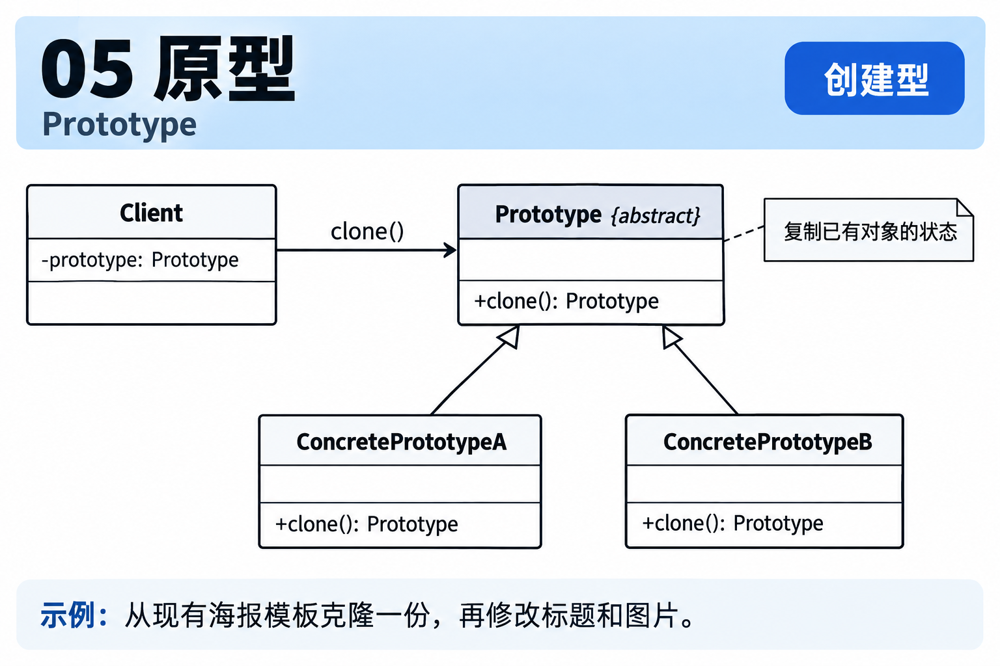
查看原尺寸图片
先看哪里
Prototype 定义 clone()，多个具体原型继承它；客户端面向原型复制。
例子与角色
从现有海报模板克隆一份，再修改标题和图片。
Prototype 是模板抽象；ConcretePrototypeA／B 是不同模板；Client 是编辑器。
怎样协作
客户端持有某个原型并调用 clone()，再调整复制对象的差异。
主要优点
- 减少客户端对具体构造类与构造细节的依赖。
- 适合已有对象作为创建样板的场景，可复用其初始化状态。
代价与易混点
复制共享引用还是复制完整对象图，需要明确浅拷贝与深拷贝边界。
原型靠复制已有对象创建新对象；单例要求受控地保留唯一实例。
回到分类与搜索
06 适配器 Adapter
结构型
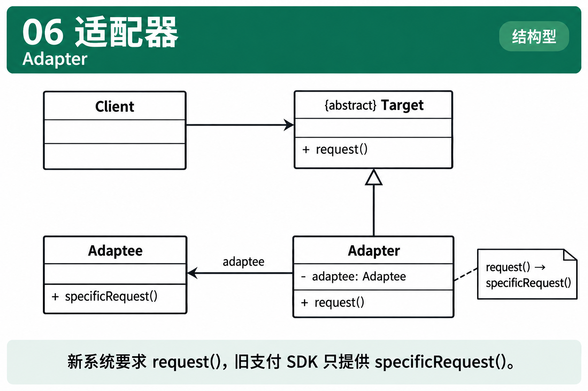
查看原尺寸图片
先看哪里
Adapter 继承 Target，却持有接口不同的 Adaptee；调用被转换后再转发。
例子与角色
新系统要求 request()，旧支付 SDK 只提供 specificRequest()。
Target 是新系统接口；Adaptee 是旧 SDK；Adapter 是转换包装；Client 使用 Target。
怎样协作
Client 调用 Target.request()，Adapter 在内部转成 Adaptee.specificRequest()。
主要优点
- 复用已有实现，减少对旧组件的修改。
- 让使用方继续依赖它熟悉的目标接口。
代价与易混点
增加转换层；语义不兼容时，改方法名并不能解决问题。
本图是对象适配器。适配器转换已有接口；桥接预先分离两个可独立变化的维度。
回到分类与搜索
07 桥接 Bridge
结构型
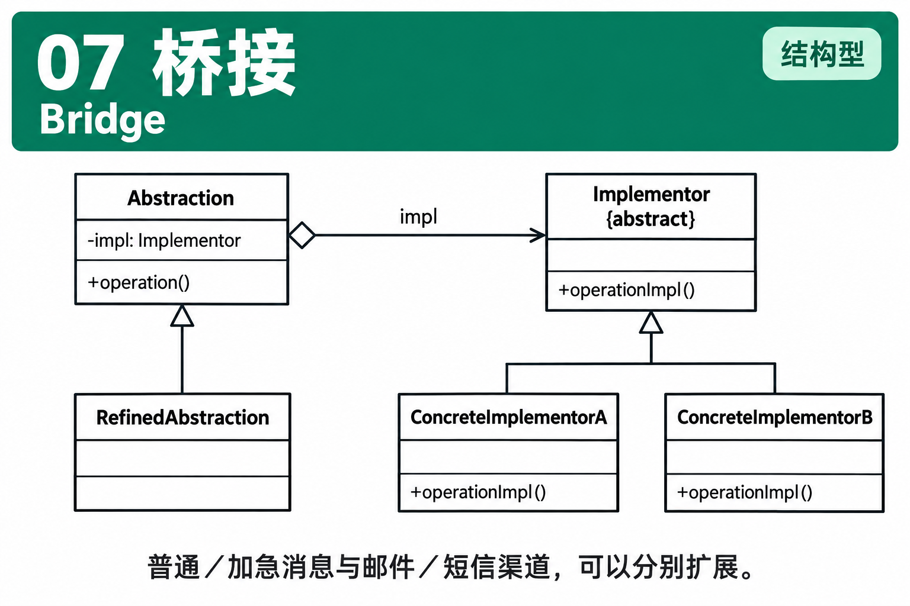
查看原尺寸图片
先看哪里
两条独立继承层次横向相连：Abstraction 持有 Implementor。
例子与角色
普通／加急消息与邮件／短信渠道，可以分别扩展。
Abstraction 是消息业务抽象；RefinedAbstraction 是加急消息；Implementor 是发送渠道；实现 A／B 是邮件与短信。
怎样协作
业务抽象执行 operation()，再委托 impl.operationImpl() 完成渠道相关部分。
主要优点
- 让业务种类与实现渠道独立扩展，减少两维组合导致的子类膨胀。
- 使用组合连接两端，便于替换底层实现。
代价与易混点
需要提前识别真正独立的变化维度，并增加抽象层。
左边的 Abstraction 持有右边实现，题图若使用空心菱形，菱形在 Abstraction 端。桥接不是命令队列。
回到分类与搜索
08 组合 Composite
结构型
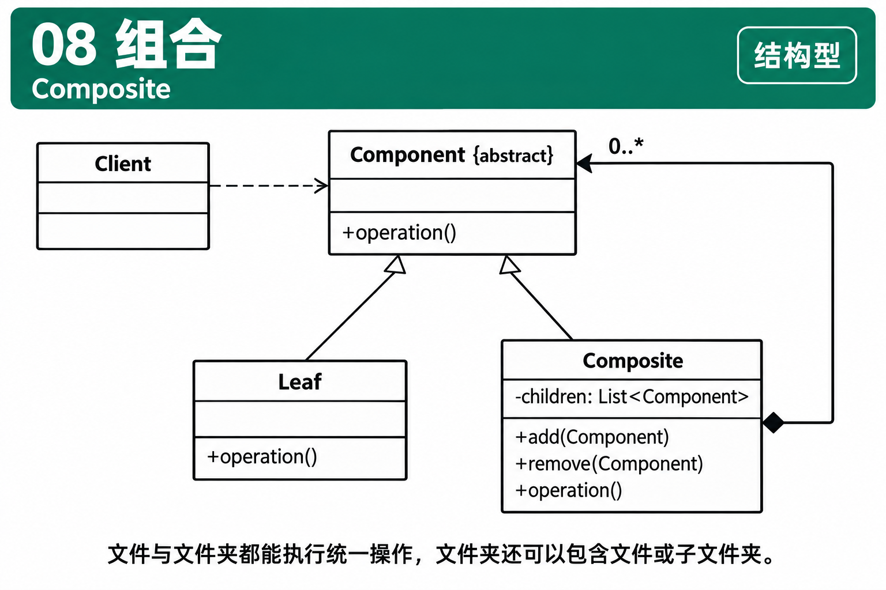
查看原尺寸图片
先看哪里
Leaf 与 Composite 都继承 Component；Composite 的 children 指回 Component。
例子与角色
文件与文件夹都能执行统一操作，文件夹还可以包含文件或子文件夹。
Component 是文件系统节点；Leaf 是文件；Composite 是文件夹；Client 统一使用 Component。
怎样协作
对叶子调用 operation() 直接工作；对容器调用相同操作，再递归访问孩子。
主要优点
- 统一操作单个对象和对象集合。
- 自然表达整体—部分的树形结构，便于递归扩展。
代价与易混点
统一接口可能包含叶子不适用的管理操作；约束孩子类型时需额外设计。
组合是结构型。解释器也可能呈树形，但它关心语法规则和 interpret() 的求值。
回到分类与搜索
09 装饰器 Decorator
结构型
别名：装饰
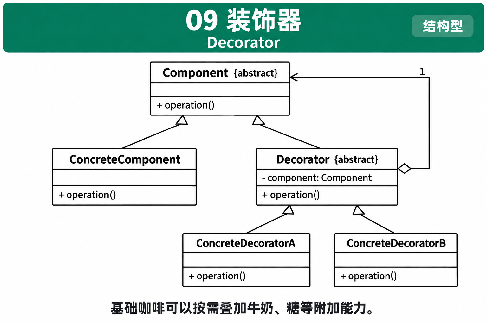
查看原尺寸图片
先看哪里
Decorator 与 ConcreteComponent 同属 Component；Decorator 又持有一个 Component。
例子与角色
基础咖啡可以按需叠加牛奶、糖等附加能力。
Component 是饮品接口；ConcreteComponent 是基础咖啡；ConcreteDecoratorA／B 是加奶、加糖包装。
怎样协作
外层装饰器先后执行自己的附加逻辑，并把统一接口调用委托给内部 component；可以再套一层。
主要优点
- 在运行时按需组合职责，减少为每种组合建立子类。
- 包装前后仍保持同一抽象接口。
代价与易混点
包装层多时，调试、对象身份及执行顺序更难追踪。
动态添加职责仍属结构型。装饰器与代理的骨架可能相同，须看是叠加能力还是控制访问。
回到分类与搜索
10 外观 Facade
结构型
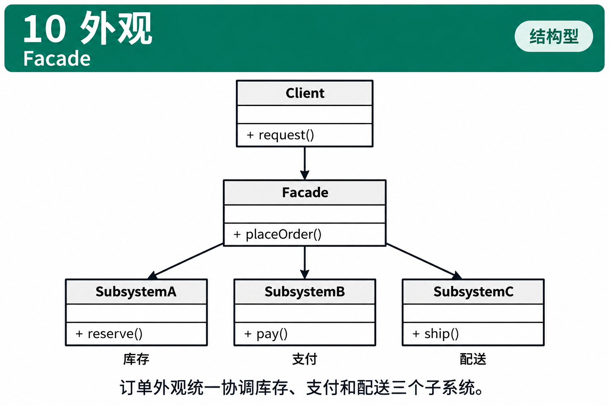
查看原尺寸图片
先看哪里
Client 只连接一个 Facade，Facade 再连接多个功能不同的子系统；不要求继承树。
例子与角色
订单外观统一协调库存、支付和配送三个子系统。
Facade 是订单入口；SubsystemA／B／C 分别负责库存、支付和配送。
怎样协作
Client 调用 Facade.placeOrder()，由外观按业务顺序协调各子系统。
主要优点
- 为复杂子系统提供较易使用的统一入口。
- 减少客户端直接依赖许多子系统细节的情况。
代价与易混点
外观过大可能变成集中所有职责的庞大类。
外观简化入口；适配器转换接口；中介者主要协调同事对象之间的交互。外观通常不禁止直接访问子系统。
回到分类与搜索
11 享元 Flyweight
结构型
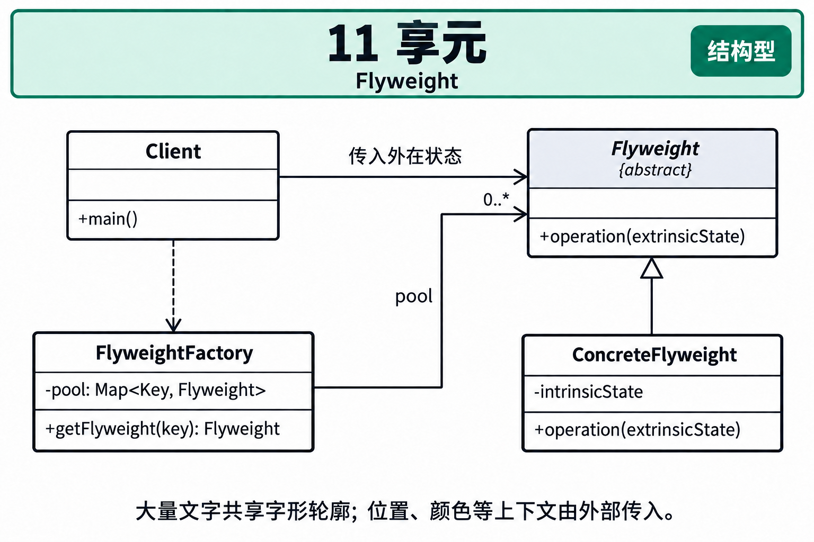
查看原尺寸图片
先看哪里
Factory 有按 key 索引的对象池；Flyweight.operation() 接受外在状态。
例子与角色
大量文字共享字形轮廓；位置、颜色等上下文由外部传入。
FlyweightFactory 管理字形池；ConcreteFlyweight 保存字形等内在状态；Client 提供位置等外在状态。
怎样协作
按 key 从池中取得共享对象，再把本次使用的 extrinsicState 传给 operation()。
主要优点
- 多个相似对象共享内在状态，减少重复对象占用。
- 共享对象的取得与复用由工厂集中管理。
代价与易混点
必须区分内在、外在状态，并承担池管理和查找的成本。
享元属结构型，重心是共享对象结构；它不要求像单例那样全系统只有一个对象，也不要求所有对象都共享。
回到分类与搜索
12 代理 Proxy
结构型
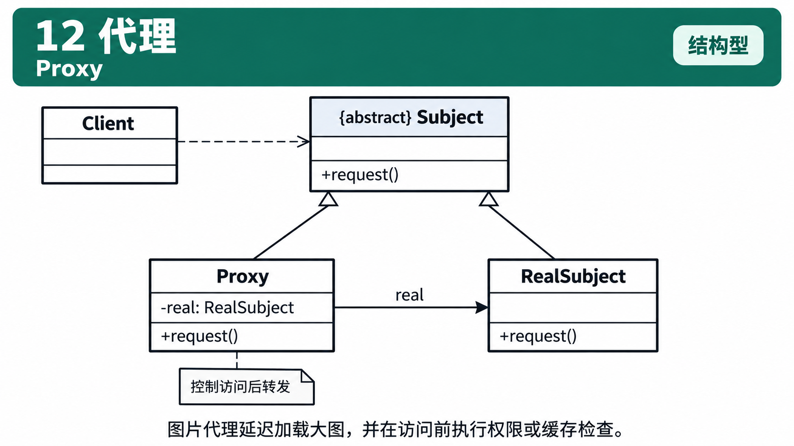
查看原尺寸图片
先看哪里
Proxy 与 RealSubject 继承同一个 Subject；Proxy 持有真实对象并代为响应相同接口。
例子与角色
图片代理延迟加载大图，并在访问前执行权限或缓存检查。
Subject 是图片接口；RealSubject 真正加载、显示图片；Proxy 控制什么时候或是否转交请求。
怎样协作
Client 调用 Subject.request()，代理先控制访问，再按需要调用真实对象。
主要优点
- 在统一接口后集中实现延迟加载、远程访问或访问控制。
- 使用方通常可以透明使用代理或真实对象。
代价与易混点
增加间接调用；远程代理等情形还会引入额外失败与延迟语义。
控制访问属于结构型。代理有时也持有 Subject，因此不能仅凭图形外观与装饰器区分。
回到分类与搜索
13 职责链 Chain of Responsibility
行为型
别名：责任链
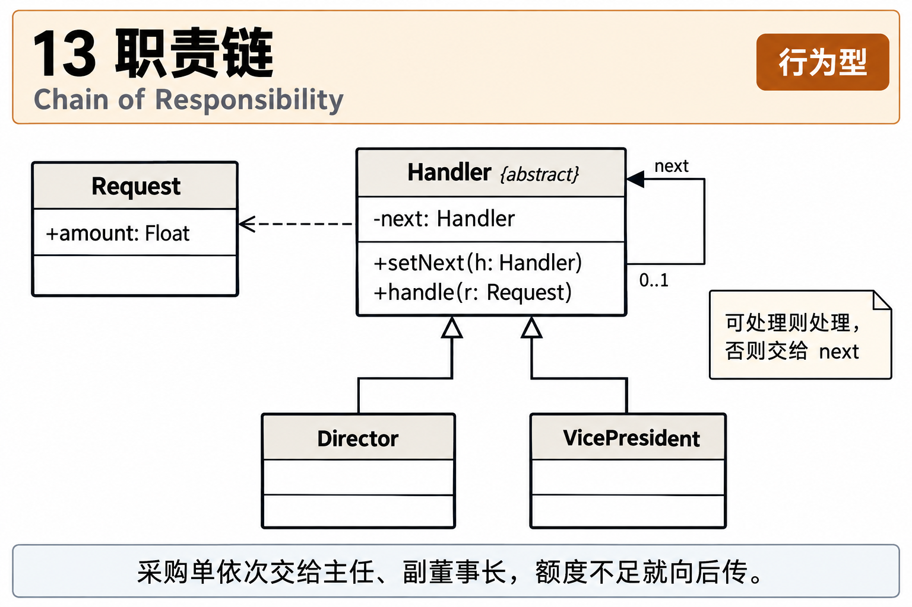
查看原尺寸图片
先看哪里
Handler 的 next 指回 Handler；具体处理者共同继承它。
例子与角色
采购单依次交给主任、副董事长，额度不足就向后传。
Handler 是审批抽象；Director、VicePresident 是两级审批者；Request 是采购单。
怎样协作
能审批就处理，否则交给 next；链尾也可能无人处理。
主要优点
- 发送者不必指定最终审批者。
- 可调整处理者的次序与组合。
代价与易混点
请求可能无人处理，排查需沿链追踪。
职责链逐级寻找处理者；观察者通常通知多个订阅者。
回到分类与搜索
14 命令 Command
行为型
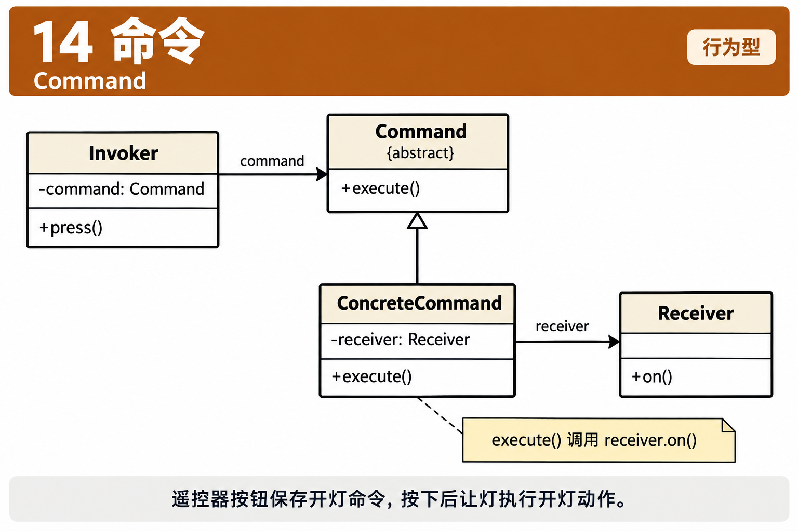
查看原尺寸图片
先看哪里
Invoker 持有 Command；具体命令另外持有 Receiver。
例子与角色
遥控器按钮保存开灯命令，按下后让灯执行开灯动作。
Invoker 是按钮；Command 是命令抽象；ConcreteCommand 是开灯命令；Receiver 是灯。
怎样协作
按钮调用 execute()，开灯命令再调用灯的 on()。
主要优点
- 请求发起者与实际执行者分离。
- 请求对象化后便于排队与记录。
代价与易混点
每类命令可能增加一个类；撤销需另行实现。
命令封装请求；访问者通过 accept 和 visit 扩展元素操作。
回到分类与搜索
15 解释器 Interpreter
行为型
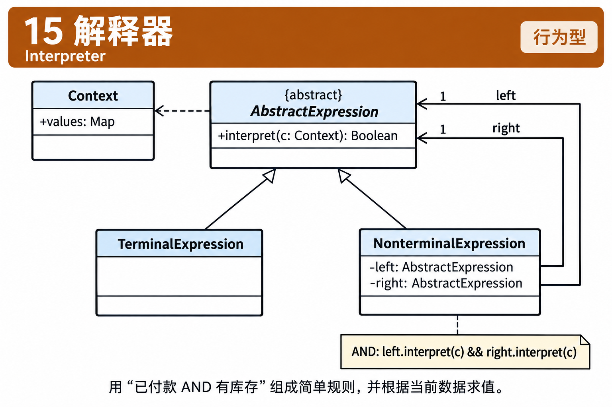
查看原尺寸图片
先看哪里
表达式有 interpret(context)；非终结符保存子表达式。
例子与角色
用“已付款 AND 有库存”组成简单规则，并根据当前数据求值。
AbstractExpression 是表达式抽象；TerminalExpression 判断条件；NonterminalExpression 表示二元 AND；Context 保存数据。
怎样协作
AND 分别解释左右表达式，再合并布尔结果。
主要优点
- 用对象结构直接表达简单语法。
- 可递归组合已有表达式。
代价与易混点
复杂语法会产生许多类，执行效率也可能受限。
解释器属行为型；组合属结构型，二者都可能画成树。
回到分类与搜索
16 迭代器 Iterator
行为型
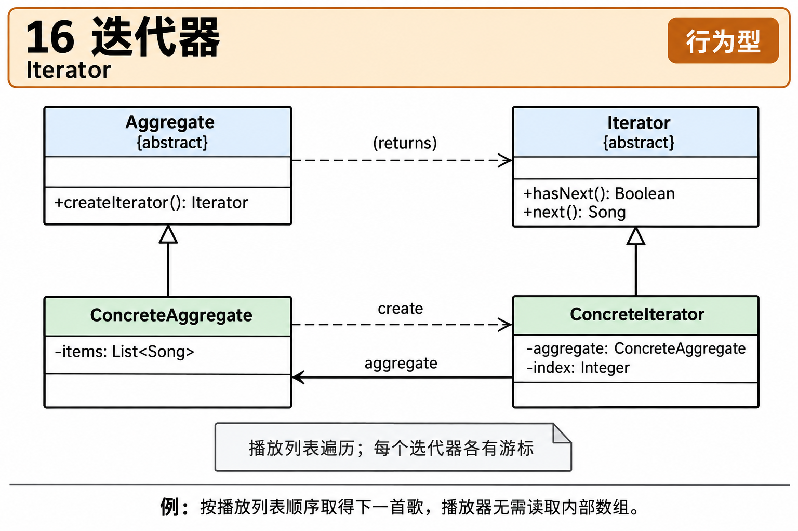
查看原尺寸图片
先看哪里
Aggregate 创建 Iterator；具体迭代器持有具体聚合并记录游标。
例子与角色
按播放列表顺序取得下一首歌，播放器无需读取内部数组。
Aggregate 是列表抽象；ConcreteAggregate 保存歌曲；Iterator 是遍历抽象；ConcreteIterator 管理位置。
怎样协作
先 createIterator()，再用 hasNext()、next() 逐项访问。
主要优点
代价与易混点
增加遍历对象；遍历时修改集合需约定行为。
迭代器管理遍历过程；访问者封装施加于元素的操作。
回到分类与搜索
17 中介者 Mediator
行为型
别名：调停者
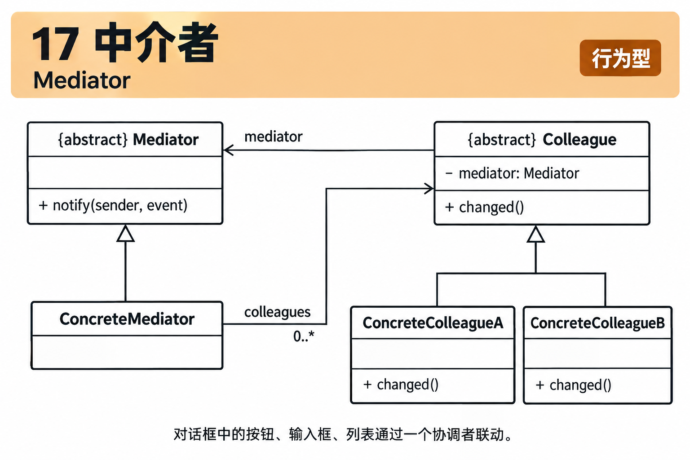
查看原尺寸图片
先看哪里
同事对象指向 Mediator，具体中介者集中协调多个同事。
例子与角色
对话框中的按钮、输入框、列表通过一个协调者联动。
Colleague 是控件抽象；ColleagueA／B 是不同控件；ConcreteMediator 是对话框协调逻辑。
怎样协作
控件报告发生的事件，中介者决定通知哪个控件更新，控件之间减少直接引用。
主要优点
- 将多对多交互集中到协调对象，减少同事之间的相互依赖。
- 同事类更便于复用，交互规则可以在中介者中调整。
代价与易混点
中介者可能承担过多逻辑，成为复杂的协调中心。
观察者偏向一对多通知；中介者还决定交互规则。同事对象不一定必须继承同一父类，本图采用常见抽象同事画法。
回到分类与搜索
18 备忘录 Memento
行为型
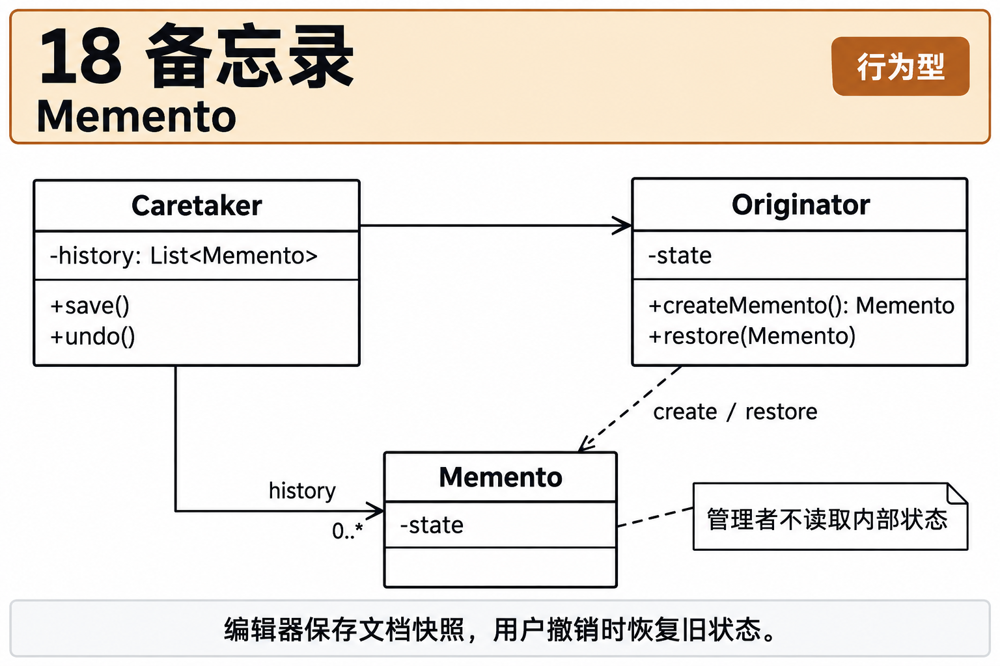
查看原尺寸图片
先看哪里
Originator 生成／恢复 Memento，Caretaker 保存快照但不解释其内部状态。
例子与角色
编辑器保存文档快照，用户撤销时恢复旧状态。
Originator 是编辑器；Memento 是状态快照；Caretaker 是历史管理器。
怎样协作
历史管理器保存由编辑器创建的快照；恢复时将快照交还编辑器。
主要优点
- 在不向管理者公开内部状态细节的前提下保存与恢复状态。
- 将历史保存职责从业务对象中分离。
代价与易混点
快照多或状态大时，会增加存储与复制成本。
备忘录保存状态；命令保存请求。撤销功能可以同时使用两者，不能见到“撤销”就只选其中一个。
回到分类与搜索
19 观察者 Observer
行为型
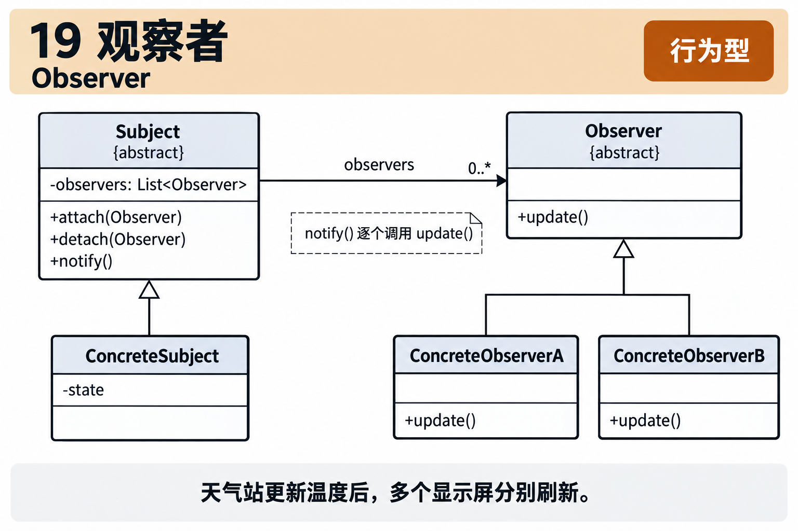
查看原尺寸图片
先看哪里
Subject 持有一组 Observer；通知方法逐个调用 update()。
例子与角色
天气站更新温度后，多个显示屏分别刷新。
Subject 是被观察目标；ConcreteSubject 是天气站；ConcreteObserverA／B 是两个显示屏。
怎样协作
显示屏先订阅；目标状态变化后执行 notify()，分别通知各个观察者。
主要优点
- 发布者依赖观察者抽象，便于增加或移除订阅者。
- 用一对多依赖传播变化，避免目标直接耦合每种显示实现。
代价与易混点
通知顺序、循环更新和订阅生命周期需要管理。
观察者是多个接收者分别收到通知；职责链沿后继逐个尝试处理；中介者集中协调多方交互。
回到分类与搜索
20 状态 State
行为型
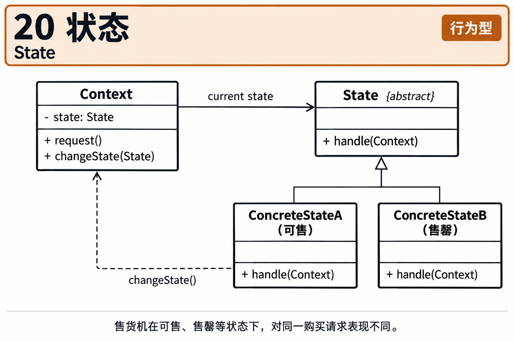
查看原尺寸图片
先看哪里
Context 持有 State，多种 ConcreteState 封装各自的状态相关行为。
例子与角色
售货机在可售、售罄等状态下，对同一购买请求表现不同。
Context 是售货机；ConcreteStateA／B 分别表示可售、售罄；State 是状态行为抽象。
怎样协作
Context 将请求交给当前 state.handle(context)；状态变化时替换当前状态对象。
主要优点
- 将某个状态下的行为集中到相应状态类，减少散落的状态条件分支。
- 状态行为与切换意图可以显式表达，便于扩展状态。
代价与易混点
状态类可能增多，转换规则也需要保持清楚。
State 与 Strategy 的类图骨架可能相同。状态关心状态变化导致行为变化；策略关心同一任务的算法替换。
回到分类与搜索
21 策略 Strategy
行为型
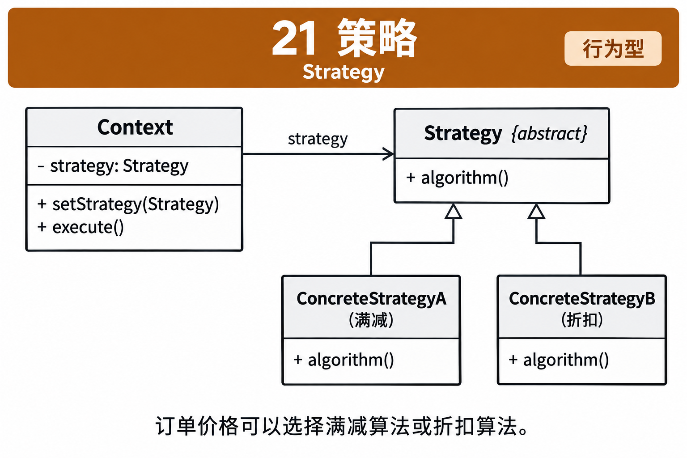
查看原尺寸图片
先看哪里
Context 持有 Strategy，并把同一项计算委托给可替换的算法子类。
例子与角色
订单价格可以选择满减算法或折扣算法。
Context 是订单计价器；ConcreteStrategyA／B 是满减、折扣算法；Strategy 定义算法入口。
怎样协作
选定策略后调用 Context.execute()，由当前 strategy.algorithm() 完成算法。
主要优点
- 把不同算法封装为可替换对象，减少计价器内部的大段选择分支。
- 算法可以独立测试和扩展，并可在运行时替换。
代价与易混点
使用方或配置需要知道策略差异；策略对象数量可能增加。
策略不等于自动状态切换。模板方法依靠继承复用步骤骨架；策略通过持有另一个对象替换算法。
回到分类与搜索
22 模板方法 Template Method
行为型
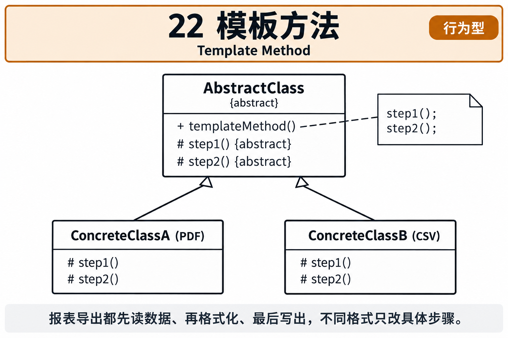
查看原尺寸图片
先看哪里
同一父类中既有模板方法，又有待子类实现的基本步骤；图的核心是继承。
例子与角色
报表导出都先读数据、再格式化、最后写出，不同格式只改具体步骤。
AbstractClass 固定导出流程；ConcreteClassA／B 分别实现 PDF、CSV 的步骤。
怎样协作
templateMethod() 按既定顺序调用 step1()、step2()，实际步骤执行子类实现。
主要优点
- 复用稳定流程，减少重复的组织代码。
- 把允许变化的步骤明确留给子类。
代价与易混点
对子类有继承耦合；流程骨架变化可能影响所有子类。
模板方法的变化点在继承层次里；策略的变化点在 Context 持有的策略对象里。模板方法并不表示所有方法都抽象。
回到分类与搜索
23 访问者 Visitor
行为型
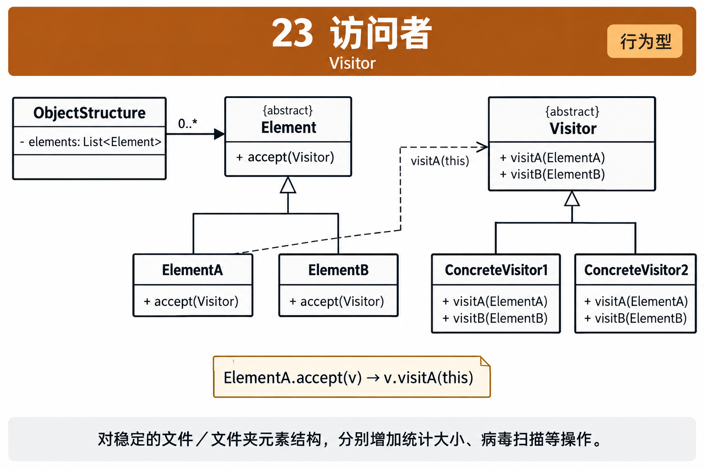
查看原尺寸图片
先看哪里
Element 与 Visitor 两套继承层次；元素有 accept(visitor)，访问者有按元素类型区分的 visitA／visitB。
例子与角色
对稳定的文件／文件夹元素结构，分别增加统计大小、病毒扫描等操作。
ElementA／B 是不同元素；ConcreteVisitor1／2 是不同操作；ObjectStructure 保存元素集合。
怎样协作
ElementA.accept(v) 内调用 v.visitA(this)，再由具体访问者执行对应操作，体现双分派。
主要优点
- 在元素类型较稳定时，便于增加新的跨元素操作。
- 同一种操作可以集中在一个具体访问者中。
代价与易混点
增加元素类型往往要修改 Visitor 接口及所有具体访问者，也可能要求暴露访问所需信息。
访问者把新操作放到访问者层次；命令把请求对象化。accept() 与按元素重载的 visit() 是关键。
回到分类与搜索
易混模式对照
| 相近组合 | 判别主线 | 类别 |
|---|
| 工厂方法／抽象工厂／建造者 | 一个产品的多态创建／一套产品族／分步骤组装复杂结果 | 都属创建型 |
| 适配器／桥接 | 转换已有的不兼容接口／分开两个可独立扩展的维度 | 都属结构型 |
| 装饰器／代理 | 叠加职责／控制访问；两者类图骨架可能相同 | 都属结构型 |
| 组合／解释器 | 统一操作部件树／按语法树求值；不能看到树就只选组合 | 结构型／行为型 |
| 策略／状态／模板方法 | 替换算法／随状态改变行为／父类固定步骤骨架 | 都属行为型 |
| 观察者／中介者／职责链 | 一对多通知／中心协调交互／沿后继尝试处理 | 都属行为型 |
| 命令／备忘录／访问者 | 请求对象化／状态快照／把新操作放在访问者层次 | 都属行为型 |
装饰器的“动态添加职责”归结构型；命令的“请求封装成对象”归行为型。不要只凭“职责”“封装”两个词归类。
本地章节：第五章软件工程基础知识。图像、例子和说明由本轮专题制作；图片采用相对路径，无外部脚本或字体依赖。